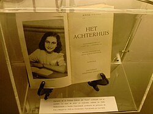

EL DIARIO DE ANA FRANK
El Diario de Ana se inicia como una expresión privada de sus pensamientos íntimos, expresando la intención de nunca permitir que otros lo leyeran. Describe cándidamente su vida, su familia y compañeros y su situación, mientras empieza a reconocer su ambición de escribir novelas y publicarlas. En el verano de 1944, escuchó una transmisión de radio de Gerrit Bolkestein —miembro del gobierno neerlandés en el exilio— que decía que al terminar la guerra crearía un registro público de la opresión sufrida por la población de su país bajo la ocupación alemana. Mencionó la publicación de cartas y diarios, de manera que Ana decidió que contribuiría con su Diario. Comenzó a corregir su escritura, a eliminar secciones y a reescribir otras, en vistas a una posible publicación. A su cuaderno original, anexó varios cuadernos adicionales y hojas sueltas. Creó pseudónimos para los miembros del grupo y sus benefactores. La familia van Pels se convirtió en Hermann, Petronella y Peter van Daan; Fritz Pfeffer pasó a llamarse Albert Dussel. Otto Frank utilizó la versión original del Diario, conocida como «versión A», y la versión corregida, conocida como «versión B», para producir la primera versión para ser publicada. Retiró algunos pasajes, sobre todo aquellos en los que se refería a su esposa en términos poco halagadores, así como secciones en las que hablaba de detalles íntimos respecto a su floreciente sexualidad. Restauró las verdaderas identidades de su familia, pero retuvo los pseudónimos de las otras personas.rank llevó el diario a la historiadora Anne Romein, quien intentó publicarlo, sin éxito. Luego se lo pasó a su esposo Jan Romein, quien escribió un artículo sobre el libro con el título de «Kinderstem» («La voz de una niña») en el periódicoHet Paroolel 3 de abril de 1946. Escribió que el diario «pausadamente expresado en la voz de una niña, muestra todos los odios del fascismo, mejor que todas las evidencias de los juicios de Núremberg juntas».[13]Su artículo atrajo la atención de los editores y el Diario fue publicado en los Países Bajos en 1947 por el editor Contact, de Ámsterdam, bajo el título Het Achterhuis (La casa de atrás). Fue reimpreso en 1950. En abril de 1955 apareció la primera traducción del diario en español bajo el título Las habitaciones de atrás (traducción de M.ª Isabel Iglesias, editorial Garbo, Barcelona).
En 1986, se publicó una edición crítica del Diario.[15] Esta edición compara secciones originales con secciones modificadas por el padre, e incluye una discusión relativa a su autenticidad así como datos históricos sobre su familia.En 1988, Cornelis Suijk —antiguo director de la Fundación Ana Frank y presidente de la Fundación para la educación sobre el Holocausto de los Estados Unidos— anunció que había obtenido cinco páginas que habían sido eliminadas por Otto Frank del Diario antes de su publicación. Suijk afirma que Otto Frank le entregó esas páginas poco antes de su muerte en 1980. Las páginas eliminadas contienen comentarios muy críticos de Ana Frank hacia la relación matrimonial de sus padres y hacia su madre.[16] La decisión de Suijk de reclamar derechos de autor sobre las cinco páginas para con ello financiar su fundación en los Estados Unidos causó controversia. El Instituto Neerlandés de Documentación de Guerra, actual propietario del manuscrito, solicitó que le fueran entregadas las páginas faltantes. En 2000, el Ministerio Neerlandés de Educación, Cultura y Ciencia accedió a donar 300 000 dólares a la fundación de Suijk y las páginas fueron entregadas en 2001.[17] Desde entonces, han sido incluidas en las nuevas ediciones del Diario. En 2004, se publicó un nuevo libro en los Países Bajos, titulado Mooie zinnen-boek (Libro de frases bonitas), que contenía fragmentos de libros y poemas cortos que Ana recopiló, por consejo de su padre, durante su permanencia en la achterhuis.
Elogio a Ana Frank y su diario
En su introducción a la primera edición del Diario en los Estados Unidos, Eleanor Roosevelt lo describió como «uno de los más sabios y conmovedores comentarios que he leído sobre la guerra y su impacto en los seres humanos». El escritor soviético Ilya Ehrenburg diría más tarde: "Una voz que habla por la de seis millones; la voz no de un sabio o un poeta, sino la de una muchacha corriente".[18] A medida que ha crecido la talla de Ana Frank como escritora y humanista, se ha convertido en un símbolo del Holocausto y más ampliamente como una representante de la persecución. Hillary Rodham Clinton, en su discurso de acogida del Premio Humanitario Elie Wiesel en 1994, citó el Diario de Ana Frank y dijo que «nos despierta frente a la locura de la indiferencia y el terrible precio que supone para nuestros jóvenes», que relacionó con los recientes acontecimientos ocurridos en Sarajevo, Somalia y Ruanda.[19] Tras recibir el premio humanitario de la Fundación Ana Frank en 1994, Nelson Mandela se dirigió a una multitud en Johannesburgo, diciendo que había leído el diario de Ana Frank mientras estaba en prisión y que «obtuvo un gran aliento de él». Comparó la lucha de Ana contra el nazismo con la suya propia contra el apartheid, trazando una línea paralela entre las dos filosofías con el comentario «porque estas creencias son evidentemente falsas, y porque fueron, y siempre serán desafiadas por los semejantes a Ana Frank, están destinadas al fracaso».[20
 Leer el libro en PDF
es una película dramática estadounidense de 1959 dirigida por George Stevens, un cineasta de Hollywood que anteriormente participó en la captura de pruebas de los campos de concentración, con guion de Frances Goodrich y Albert Hackett basado en su obra de teatro homónima ganadora de un Premio Pulitzer en 1959. La obra de teatro estaba basada a su vez en el diario de Ana Frank, una adolescente judía nacida en Alemania que vivió escondida en Ámsterdam con su familia durante la Segunda Guerra Mundial. Es la primera versión cinematográfica tanto de la obra como de la historia original, y cuenta con tres miembros del elenco original de Broadway. La película fue protagonizada por Millie Perkins como Ana, Joseph Schildkraut como Otto Frank, Shelley Winters como Petronella van Daan, Diane Baker como Margot Frank y Ed Wynn como Albert Dussel. Los interiores se rodaron en Los Ángeles en un escenario de sonido duplicado de la fábrica de Ámsterdam, y los exteriores se filmaron en el edificio real.[3] La película fue recibida positivamente por los críticos y actualmente tiene una calificación de 81% en Rotten Tomatoes. Ganó tres Premios Oscar en 1960, incluido el de Mejor Actriz de Reparto para Shelley Winters. Fue nominada a Mejor Película, pero perdió en la categoría ante Ben-Hur de William Wyler. Años después, Winters donó su Oscar a la Casa de Ana Frank.
DATOS INTERESANTES DEL DIARIO DE ANA FRANK SON
- ayudó al mundo a conocer los horrores del genocidio nazi de los judíos europeos
- nos enseña a no aceptar pasivamente el rol de víctima, a convertir la escritura en un acto de libertad, una ayuda a la supervivencia, un acto de salvación.
- Su historia muestra que cada hecho de la guerra solo deja tristezas, por lo que siempre debemos apostarle a la paz, a la esperanza y a la libertad
- " y sigo buscando la manera de llegar a ser la que tanto querría ser, lo que yo sería capaz de ser, si... no hubiera otras personas en el mundo. Tuya, ANA."
- El Diario de Ana Frank